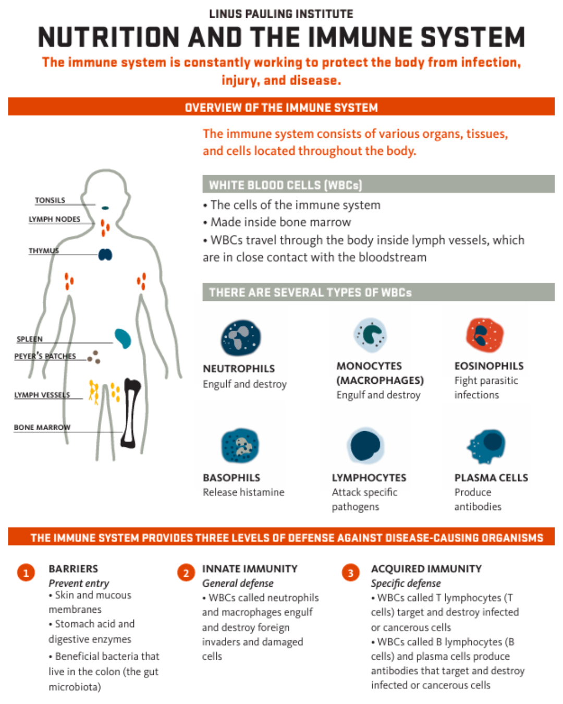
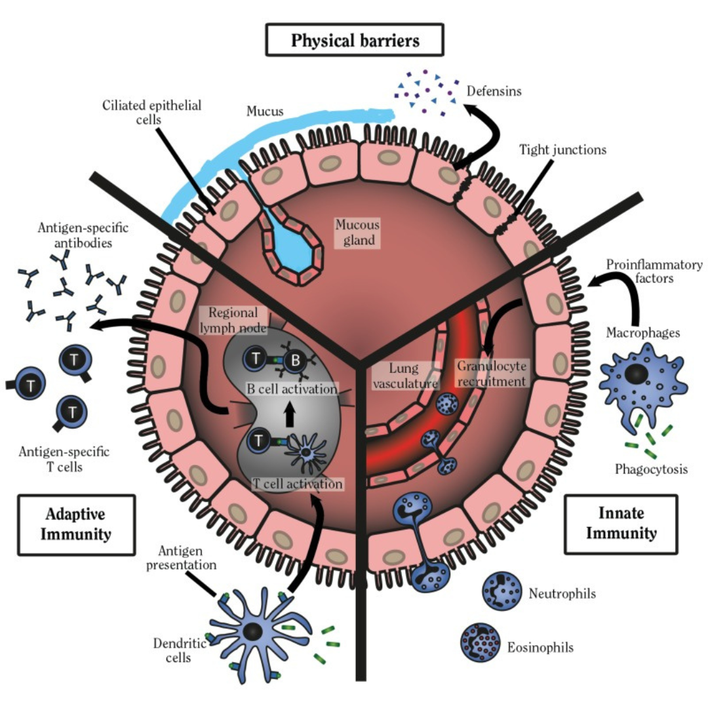
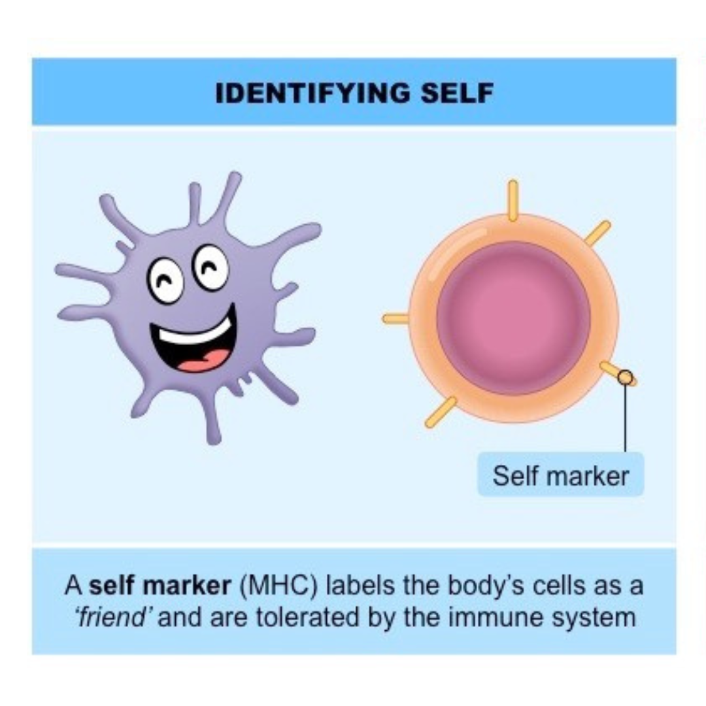
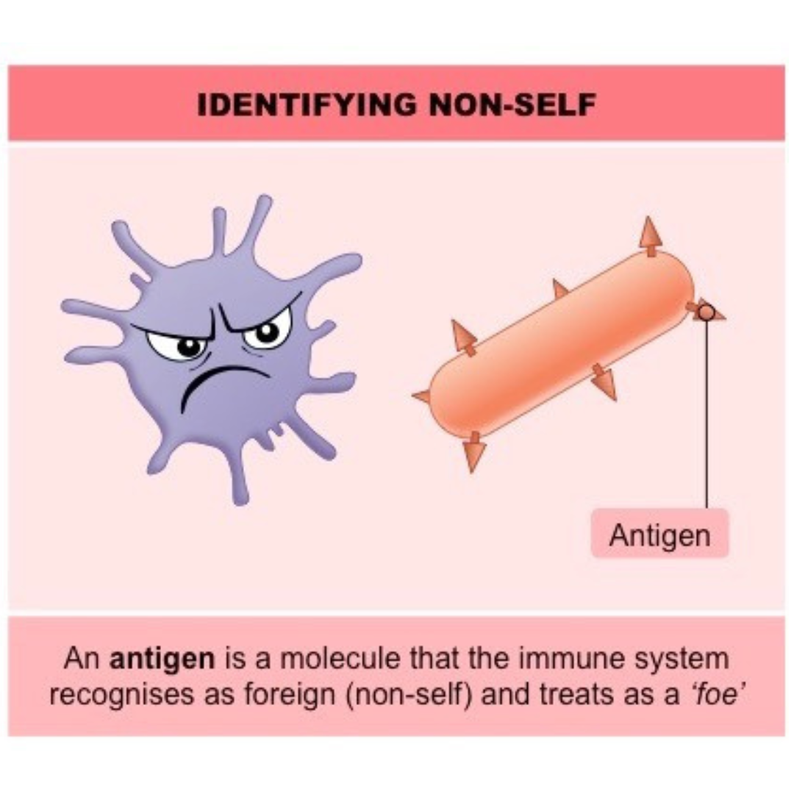

Introduction to Artificial Immune Systems
Artificial Immune Systems (AIS) are computational models inspired by the principles and processes of the vertebrate immune system. These systems are designed to solve complex problems in fields like mathematics, engineering, and information technology by mimicking the adaptive and learning capabilities of the biological immune system.
Infographic 1: Biological Immune System Overview

This diagram shows the human immune system’s key players and structures. AIS draws inspiration from this natural system to develop algorithms that can adapt and learn, just like our immune system does to fight infections.
Key Features of AIS
- Learning and memory mechanisms
- Pattern recognition
- Anomaly detection
- Optimization capabilities
Infographic 2: Innate vs. Adaptive Immunity

The division between innate and adaptive immunity mirrors how AIS algorithms balance fast initial responses (like innate immunity) with ongoing learning and adaptation (like adaptive immunity) to improve performance over time.
AIS and the Biological Immune System
By emulating how the immune system distinguishes between self and non-self, AIS can detect and respond to novel threats in various computational environments.
Infographic 3: Identifying Self vs. Non-Self


This visual illustrates how the biological immune system distinguishes between self (friendly) and non-self (foreign) cells. Similarly, Artificial Immune Systems use this concept to identify normal data (self) and detect anomalies (non-self) in computational environments.